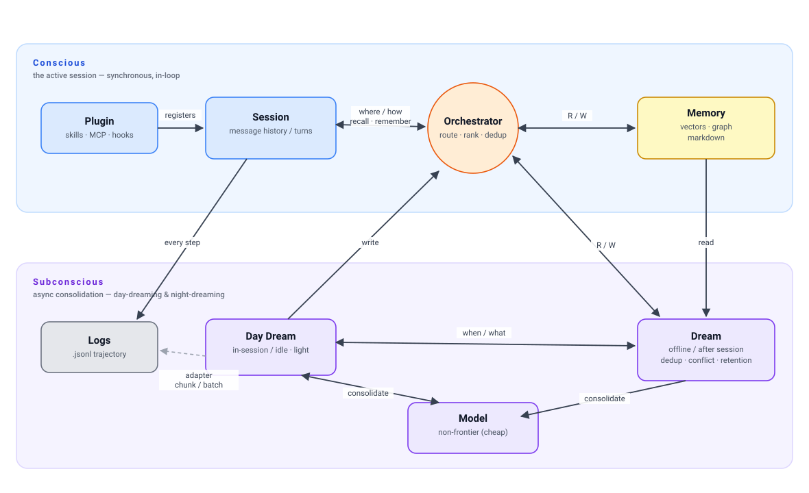

A coding agent writes memories as it works; a router sends each query to the one backend that answers it best; an offline worker keeps the store clean. Three storage backends sit behind a single interface.
The diagram is also available as a standalone file:
assets/img/architecture.svg.
Each step, the persistence layer tags a candidate memory (timestamp, relevancy, session) and writes it to the right backend(s).
The orchestrator calls the router, which picks one backend; results are ranked by
recency × relevancy, de-duplicated, returned tight.
While other agents sleep, it sweeps every backend: merge duplicates, resolve contradictions, refresh governance, prune — a clean state for next session.
Querying all three in parallel is wasteful and noisy. The router reads the query and sends it to the single backend most likely to answer fast and well.
Deterministic, debuggable, zero training data needed on day one.
A lightweight classifier over the query embedding + metadata predicts the fastest, most accurate backend. Log every decision (backend, latency, hit) and retrain so routing improves with real access patterns.
One learnable dispatch point between orchestrator and backends — a tiny classification cost for big savings in latency and context noise.
Each store keeps its own index so the router's chosen backend returns candidates in milliseconds — not by scanning everything.
Embed on write into an HNSW / FAISS index beside the row. On query: embed, ANN search, IDs back in
<100ms, hydrate from SQLite — even at thousands of memories.
A keyword → file-path hash map. Write updates it; query looks up matching files, then light re-rank. Ideal for literal recall.
Pre-computed indexes over node/edge types. Traverse from a query node along indexed edges, bounded by depth or relevancy — native in Neo4j.
The whiteboard view: a Conscious band (the live, in-loop session) over a Subconscious band (async consolidation), with the plugin as the only surface the coding harness sees. Full contract in architecture.md §7.

Benchmarks run through the Claude Code CLI (subscription auth — API keys stripped,
no API billing), comparing Claude Code's built-in memory vs our plugin memory.
Entry point python -m memeval.claudecode.run_bench.
Each run saves a per-benchmark, versioned file:
results/{vX.Y}/{bench-name}-{timestamp}.json — vX.Y is the memory-system
version (MEMORY_VERSION, starts v0.1; bump 0.1 per memory change + run).
Stop hook → DaydreamThe memory system ships as a Claude Code plugin (skills · MCP · hooks). A
Stop hook fires the Daydream component when a session
ends, so in-session consolidation runs automatically — no manual trigger.
Two memory-creation paths: the model's in-loop remember tool, and the
Daydream pass mining the logs for what wasn't saved. Fail-open throughout.
.jsonl logs.